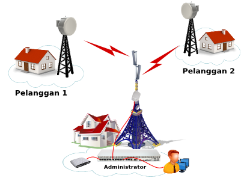
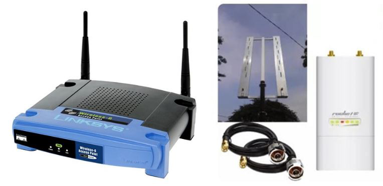
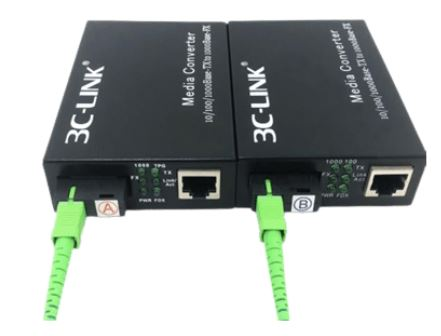

RT RW Net

RT/RW-Net adalah jaringan komputer swadaya masyarakat dalam ruang lingkup RT/RW melalui media kabel atau Wireless 2.4 Ghz dan Hotspot sebagai sarana komunikasi rakyat yang bebas dari undang-undang dan birokrasi pemerintah. Pemanfaatan RT/RW Net ini dapat dikembangkan sebagai forum komunikasi online yang efektif bagi warga
Membangun RT/RW Net adalah suatu konsep dimana beberapa komputer dalam suatu perumahan atau blok dapat saling berhubungan dan dapat berbagi data serta informasi. Konsep lain dari RT/RW Net adalah memberdayakan pemakaian internet dimana fasilitas internet tersedia selama 24 jam sehari selama sebulan dimana biaya yang akan dikeluarkan akan murah karena semua biaya pembangunan infrastruktur, operasional dan biaya langganan akan ditanggung bersama
Bagian RT RW Net
Berikut ini pembahasan bagian-bagian utama dari RT RW Net :
Catat agar tidak lupa
1. OS Router
 OS Router berfungsi untuk sebagai router yaitu untuk menghubungkan IP internal jaringan dengan IP publick / internet. Mikrotik adalah salah satu brand yang popular digunakan di RT RW Net. Jika diperlukan lebih banyak terminasi ke pengguna, bisa menggunakan switch HUB.
OS Router berfungsi untuk sebagai router yaitu untuk menghubungkan IP internal jaringan dengan IP publick / internet. Mikrotik adalah salah satu brand yang popular digunakan di RT RW Net. Jika diperlukan lebih banyak terminasi ke pengguna, bisa menggunakan switch HUB.
2. Access Point Wireless
 Perangkat ini berfungsi untuk menghubungkan ke pelanggan melalui gelombang radio. Terdapat 2 type yaitu untuk outdoor dan indoor. Jika ada lokasi pelanggan yang berdekatan, lebih hemat dihubungkan dengan access point outdoor dibandingkan dengan kabel. Sedangkan untuk indoor access point sama seperti access point pada umumnya
3. Media Converter
 Agar bisa menggunakan fiber optic, maka diperlukan media converter untuk merubah dari kabel UTP ke kabel optic di lokasi microtik dan merubah dari kabel optic menjadi kabel UTP sebelum dimasukan ke access point. Jadi penggunaan media converter harus satu pasang
Contoh Network Topologi RT RW NET
Topologi RT RW Net sangat beragam tergantung dengan kondisi dan kemampuan tehnik dan keuangan dari penggelara jaringan. Sebagai contoh pada gambar 3.6 adalah salah topologi dari perorangan yang menggelar jaringan RT RW Net di daerahnya dengan menggunakan sistem vocher. Untuk detailnya bisa disimak pada channel youtube berikut ini.